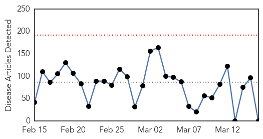
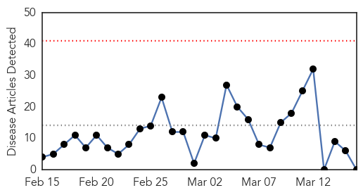
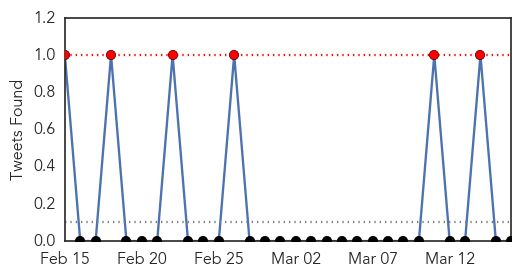

Ebola
30-Day Web Trend
0 alerts, 0 warnings

30-Day Twitter Trend
0 alerts, 3 warnings

Article Locations

Article Confidences

Top Articles:
-
No articles found for Mar 16, 2015
Top Tweets:
- 0.974
- Sierra Leone Ebola Scare Forces Evacuations - U.S. News & World Report http://t.co/IArS9jvWmd ebola EVD
- 0.925
- 10 US charity staff to leave Sierra Leone amid Ebola scare - The Herald-News http://t.co/IaoGFMvBse ebola EVD
- 0.921
- Americans exposed to Ebola patient return from Africa for monitoring - CNN http://t.co/DzMnuatoNY ebola EVD
- 0.898
- Four Americans arrive in Nebraska to be monitored for Ebola virus - Reuters UK http://t.co/IgzpRQX1kt ebola EVD
- 0.895
- American Ebola patient worsens to critical condition - USA TODAY http://t.co/Q0GNqU70l0 ebola EVD
- 0.894
- Americans exposed to Ebola return from Africa for monitoring - CNN http://t.co/YmwTo7lE8R ebola EVD
- 0.884
- Preparing for Ebola, but Stopping Lassa Fever - New York Times http://t.co/FmaZGq49nl ebola EVD
- 0.884
- Emergent BioSolutions manufactures possible Ebola vaccine for clinical trials ... - Washington Bus... http://t.co/o0o1oKBqAW ebola EVD
- 0.865
- Ebola exposed Americans return for monitoring - WPBF West Palm Beach http://t.co/Gd3AI6xA8j ebola EVD
- 0.861
- RT: Ebola in Guinea: Medical staff trained on infection prevention, but no improvement. 3 docs infected past wk at 1 hospit…
- 0.846
- As Ebola Slows, Social Life in Liberia Ramps Up - Voice of America http://t.co/jjJK6f2BiH ebola EVD
- 0.834
- Explaining and responding to the Ebola epidemic Impact and implications of the Ebola crisis http://t.co/OosVfniITg
- 0.833
- Emergent BioSolutions produces new Ebola vaccine, teaming with NIH ... - Baltimore Sun http://t.co/sNpJKM5kAP ebola EVD
- 0.832
- Ebola booster vaccine trial to combine GSK, Emergent Bio shots - Yahoo News http://t.co/uYfYkKN1DM ebola EVD
- 0.806
- After Ebola, measles threatens West Africa: http://t.co/E2QNfSmPTu
- 0.787
- American Who Contracted Ebola in Africa Now in Critical Condition at Maryland ... - ABC News http://t.co/wdtmbro3nq ebola EVD
- 0.783
- Yes, we did overreact to Dr. Nancy Snyderman's Ebola screwup - Washington Post (blog) http://t.co/9x38AfIKBA ebola EVD
- 0.726
- Redesign Of Ebola Treatment Units Draws 1500 Innovations, Including Locally - Intellectual Property Watch http://t.co/Jmbml0uS3u ebola EVD
- 0.725
- RT: Ebola’s Long Tail: the outbreak subsides, leaving children at risk of malnutrition & vaccination gaps http://t.co/S4zKxqUhF…
- 0.711
- Nurse cleared of Ebola - http://t.co/zuK5zVeXNM http://t.co/VxbDq7D8mE ebola EVD
- 0.707
- RT: Further health worker with potential Ebola exposure in Sierra Leone transported to UK for precautionary monitoring http://t.co…
- 0.654
- RT: Two articles in this week! Disease modeling review amd measles risk post Ebola. http://t.co/E3ezC8T1Fz
- 0.644
- US Ebola Patient in Critical Condition - http://t.co/FMQyohd10H http://t.co/OrGyMWuSX8 ebola EVD
- 0.644
- RT: New Ebola outbreak trend shows cases are in a smaller geographic area, which holds promise for response efforts http://t…
- 0.582
- Under-reporting and casefatality estimates for emerging epidemics ebola http://t.co/RQB3d40iYV
- 0.578
- RT: SierraLeone recorded 68 new Ebola infections and 75 deaths last week (8-15 March). These are only LAB-CONFIRMED figures.
- 0.570
- Map Ebola deaths http://t.co/cd3ImBUsfI
Influenza
30-Day Web Trend
0 alerts, 0 warnings

30-Day Twitter Trend
6 alerts, 0 warnings

Article Locations

Article Confidences

Top Articles:
-
No articles found for Mar 16, 2015
Top Tweets:
- 0.788
- Flu vaccine based upon four strains of inactivated influenza enhances flu protection http://t.co/AZM0k9R97p